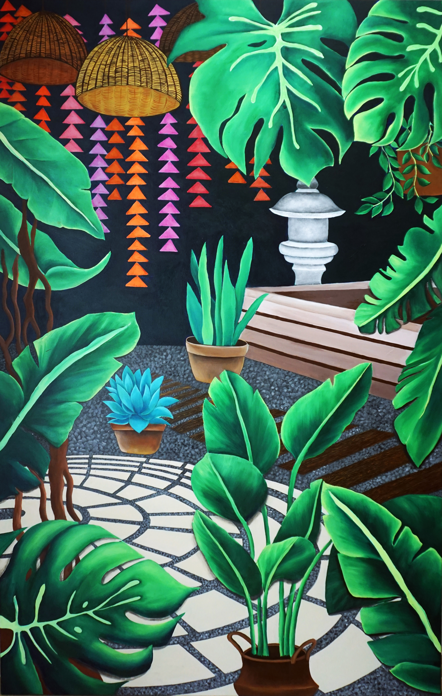
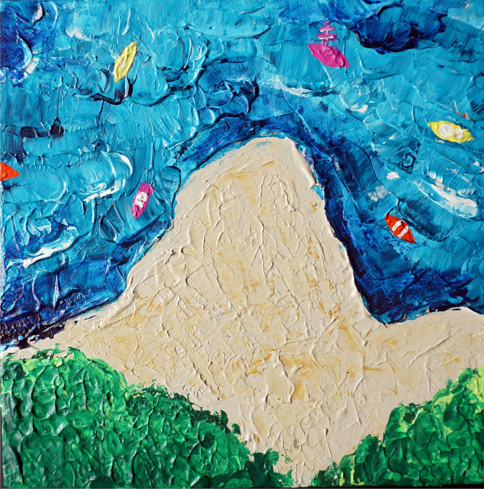
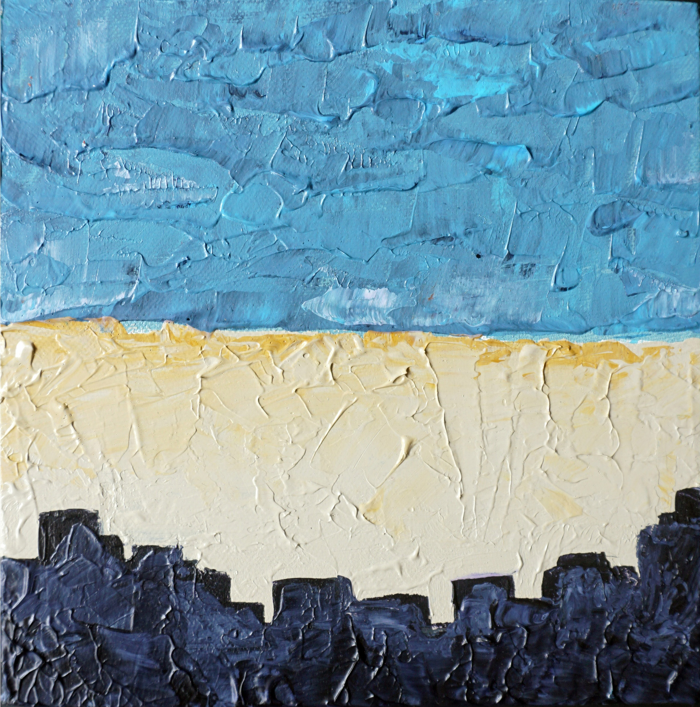
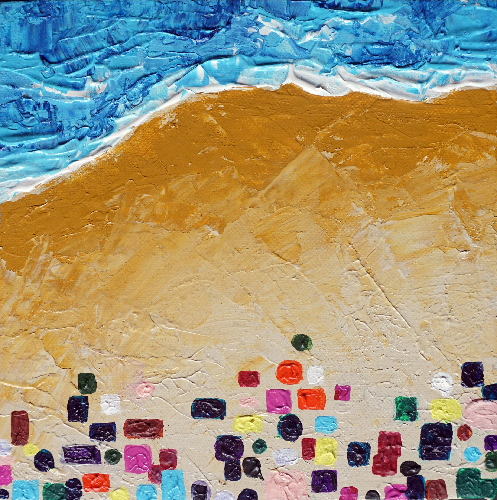
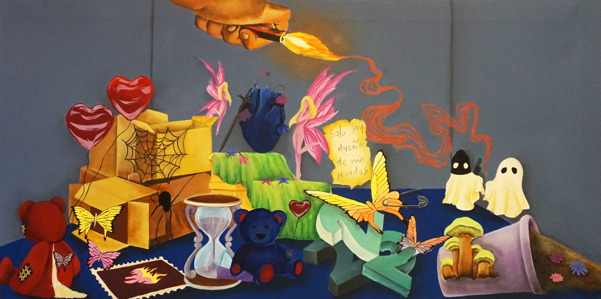

Fine Art
Paintings
Four canvases about being partly seen, and about the places that hold what you remember.

Fine Art
Four canvases about being partly seen, and about the places that hold what you remember.
A portrait where the eyes are covered — not by accident but by the painting itself. A loose sweep of blue and green cuts across her face and drips down. She is still, calm, chin resting in her hand. The eclipse is the point: something is hidden and she does not seem to mind. I was interested in what it looks like to be seen partially, and how much of a person still comes through.
Home as the place that holds every memory you make in it. The painting layers two gardens: my grandmother’s childhood home and the one I grew up in. The dense overgrowth was intentional — the leaves spill toward the viewer to pull you into the space rather than show it to you. The canvas is large for the same reason. Safety feels immersive, not distant.

Nostalgia pulls you back to places, not only times. For me it has always been beaches — Mumbai, Abu Dhabi, Koh Samui. This triptych, inspired by the work of Hema Upadhyay, looks at those coastlines from a bird’s-eye view: shapes, textures, the way land and water meet. The urge to drop into a place that makes you feel alright the moment you see it.



Ideas collect — tattoo concepts, images, lines you want to put on your body but never quite do. Mine kept accumulating. This painting is what that pile looks like when it is all put onto one canvas. Tattoos are how I process identity, and this is that process with nowhere to go but inward, in colours that stick with you.

Credits — Acrylic on canvas. Painting and photography: Tanaya Agarwal.